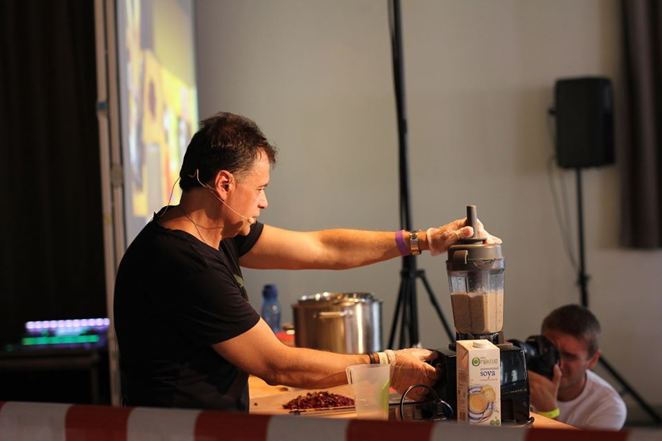

Vitajte na Varím Vegánsky!
Volám sa Miroslav Demjan a som vášnivý vegánsky kuchár. Na tomto webe nájdete množstvo chutných a jednoduchých
vegánskych receptov, ktoré si môžete pripraviť doma.
Či už ste skúsený vegán alebo len začínate svoju cestu k rastlinnej strave, tu nájdete inšpiráciu na každý deň.
Od rýchlych obedov po výnimočné večere, všetko je tu pre vás.
Prečo vegánstvo? Verím, že strava založená na rastlinách je nielen prospešná pre naše zdravie, ale aj pre našu
planétu. Pridajte sa ku mne na tejto ceste a objavte, ako chutná a uspokojujúca môže byť vegánska kuchyňa!